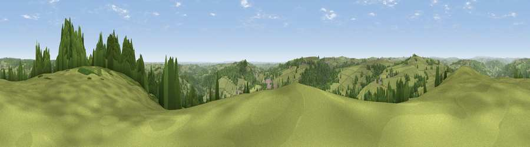

Masson Hill
#8428 in England · top 3% of its area beats it · near BonsallThe view, rendered

A 360° render of this exact spot computed from the terrain model, tree cover and land cover — summer colours, afternoon light, calibrated against photographs of famous viewpoints. Real trees, hedges and buildings will differ in detail.
The panorama
Grey silhouette: terrain skyline in each direction (720 bearings, Earth curvature and refraction included). Dashed green: skyline with trees (+15 m) and buildings (+8 m) as obstacles. Blue strip: how far the ground is visible on each bearing.
Where the view opens
Wedge length = distance to the farthest visible ground on that bearing (vegetation-aware). Rings at 10, 25 and 50 km.
What fills the view
65% grassland · 31% woodland · 2% cropland · 2% built-up
Angular shares of the visible panorama (visual magnitude), not map area. Landscape diversity 0.34 (0–1 Shannon).
Key numbers
More beautiful places nearby
The staircase of upgrades: each row has a higher view potential than everything closer. Driving times are estimates from straight-line distance, calibrated against real road routing — check an actual route before setting out.
| Place | Direction | Drive | Score |
|---|---|---|---|
| Viewpoint near Middleton | SSW · 3 km | ~7 min | 66.4 |
| Viewpoint near Wirksworth | SSE · 3 km | ~8 min | 70.0 |
| Crich Stand | ESE · 7 km | ~14 min | 73.0 |
| Alport Height | SSE · 7 km | ~15 min | 73.9 |
| Tissington Hill | WSW · 15 km | ~26 min | 75.5 |
| Viewpoint near Mow Cop | W · 43 km | ~62 min | 78.9 |
| Viewpoint near Mow Cop | W · 43 km | ~63 min | 80.2 |
| Viewpoint near Harthill | W · 77 km | ~101 min | 80.5 |
53.12460, -1.57387 · source: osm peak · position refined by local search. Computed location — check access rights before visiting.